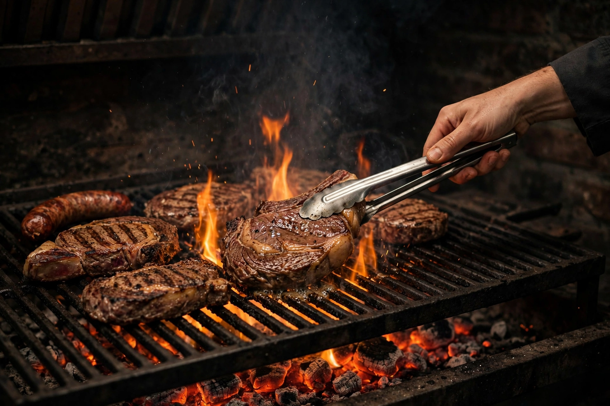
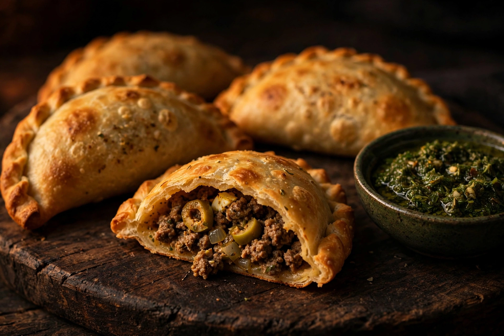
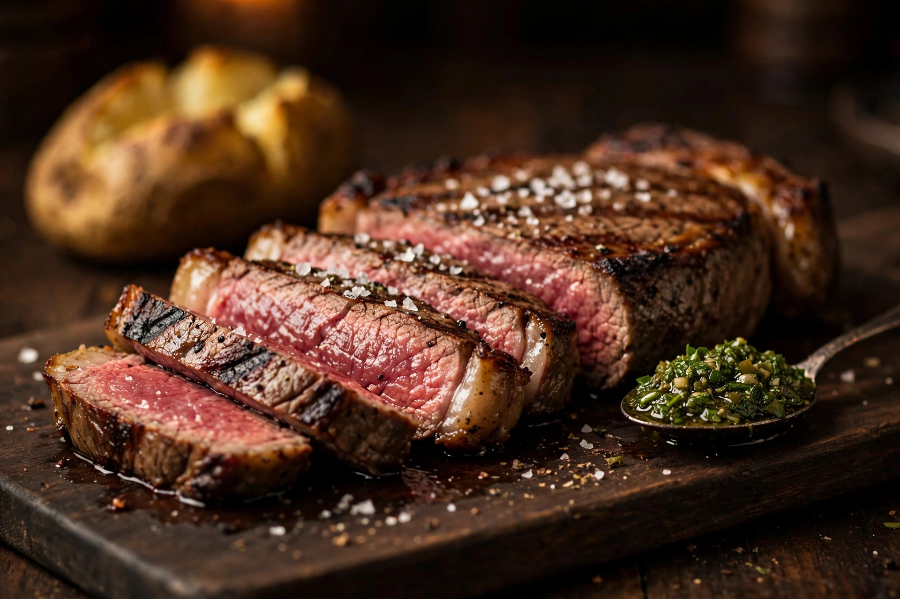
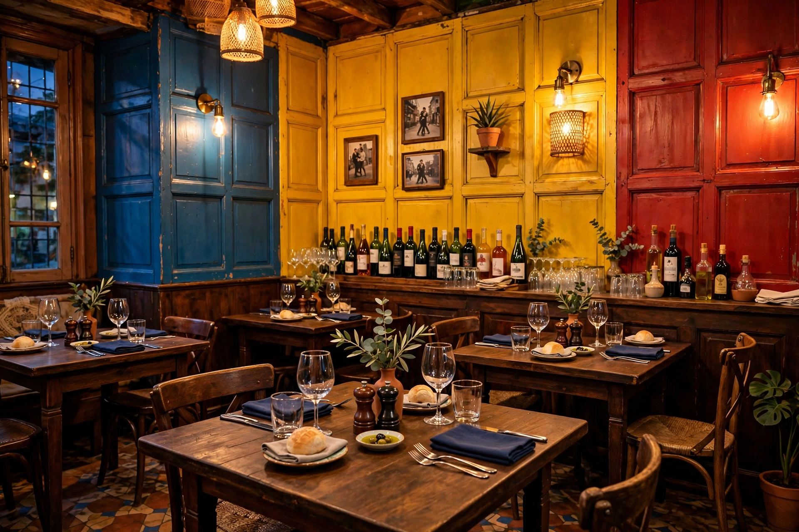

La parrillada
Le grill mixte qui arrive en grésillant, à partager.
Sur le feu ce soir : Empanadas
Viandes importées d’Argentine, cuites à la braise et servies avec chimichurri, Malbec au verre, dans une petite salle de Territet, entre Montreux et le château de Chillon.
Avenue de Chillon 70, Territet · 1820 Montreux
Mar à sam : midi et soir · Dim : midi
Ici, tout passe par la braise. Les pièces arrivent d’Argentine, le patron les grille à la commande et les sert comme là-bas : sel grossier, chimichurri, pomme de terre au four.
La pièce maîtresse, c’est la parrillada : le grill mixte qui arrive en grésillant sur son plateau chauffé, à poser au milieu de la table et à partager.

Faites glisser pour parcourir les plats.
Le grill mixte qui arrive en grésillant, à partager.

L’entrée la plus louée dans les avis, année après année.

Le nom argentin de l’entrecôte, servi avec chimichurri.

20 à 30 couverts, aux couleurs de La Boca, le quartier de Buenos Aires.
Au verre ou à la bouteille, le rouge argentin de la braise.
Les guides le remarquent depuis des années : derrière le bar, les bouteilles argentines font le mur. Malbec au verre, beaux rouges d’Argentine, et quelques vins suisses pour les curieux. Le patron conseille l’accord avec votre pièce.
Le patron est argentin. Il accueille, il sert, il conseille la pièce et la cuisson, et il raconte volontiers d’où vient la viande : d’Argentine, importée pour sa parrilla.
Autour de lui, une petite équipe de famille, une vingtaine de couverts, de vieux tangos en fond sonore et des murs aux couleurs de La Boca. Les avis racontent la même scène depuis 2011, et c’est exactement pour cela qu’on y retourne.
Tango Restaurante Grill Argentin
Avenue de Chillon 70, Territet
1820 Montreux
| Mardi à samedi | 12h00 à 14h30 18h00 à 22h00 |
|---|---|
| Dimanche | 11h30 à 16h30 |
| Lundi | Fermé |
Horaires relevés sur TripAdvisor. La fiche Google affiche des horaires différents le dimanche et le lundi : un petit appel permet de confirmer avant de venir.